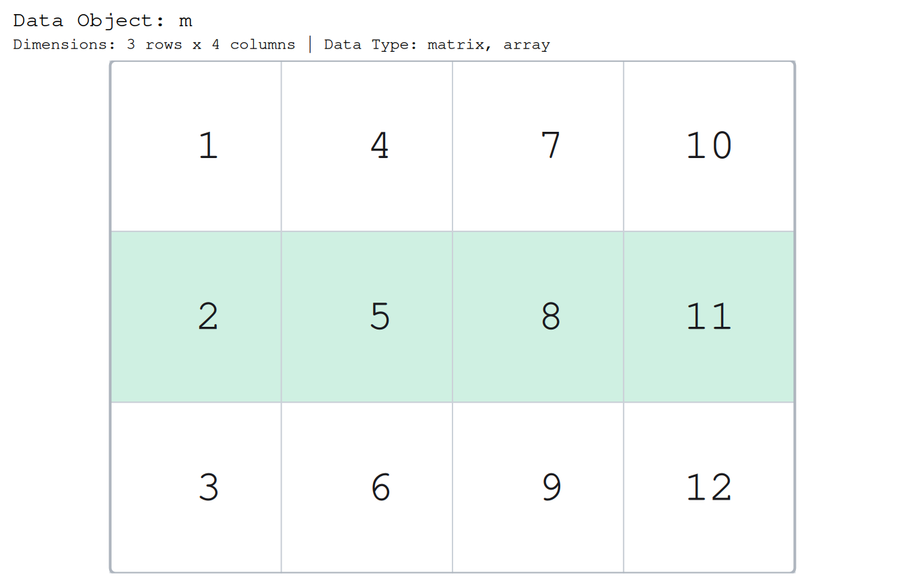
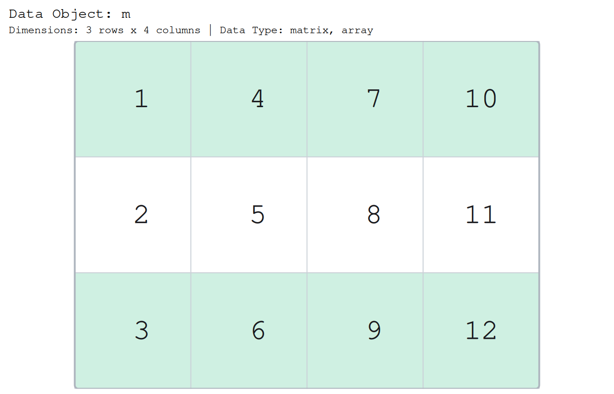
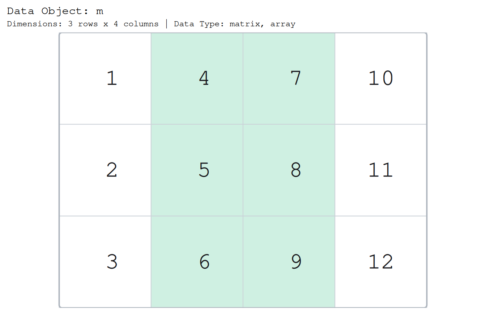
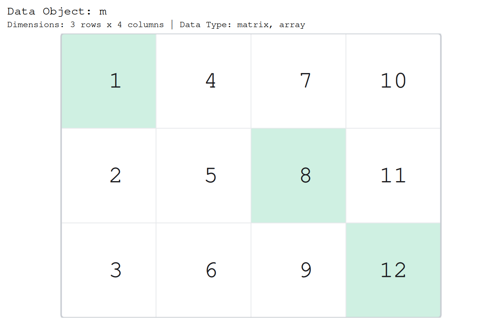
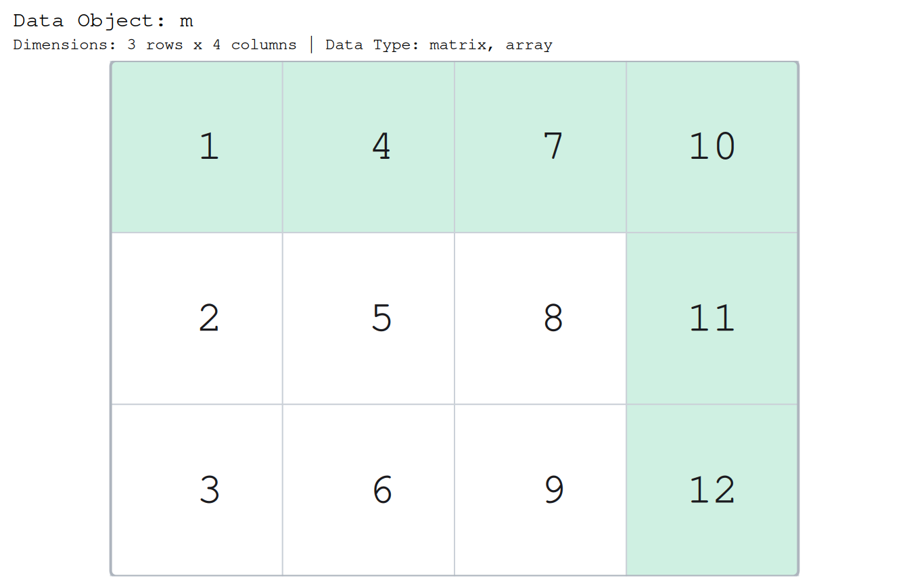
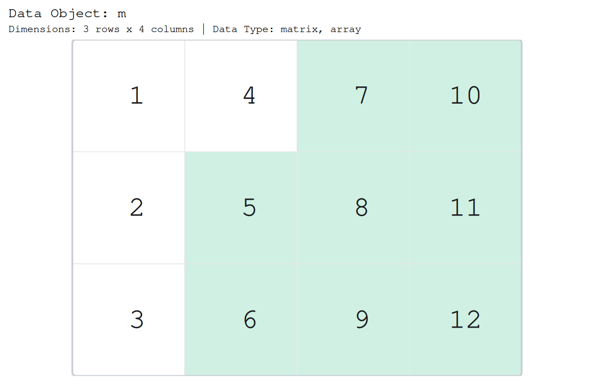
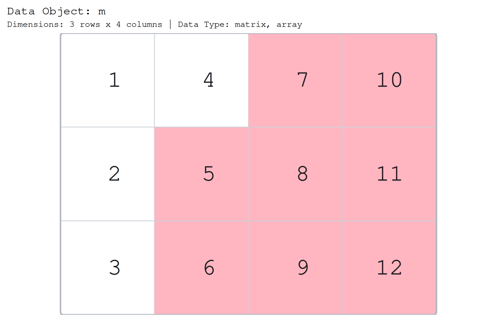
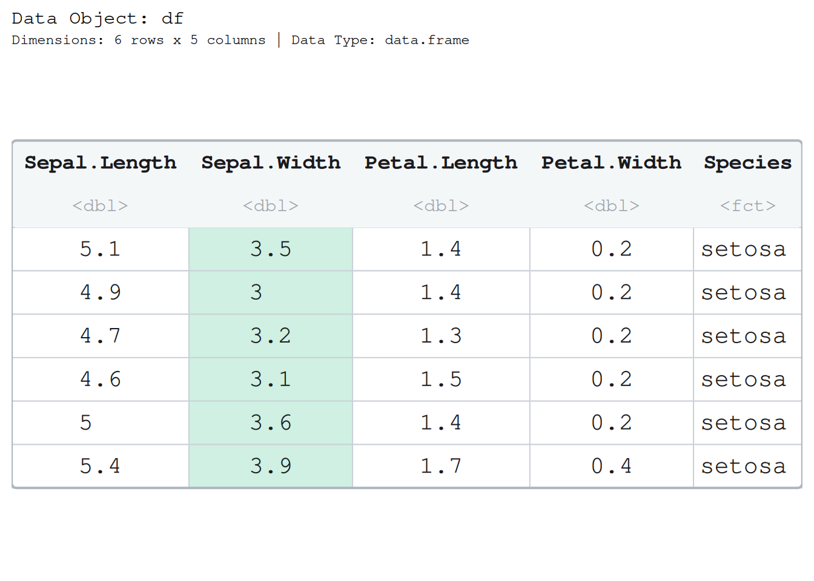
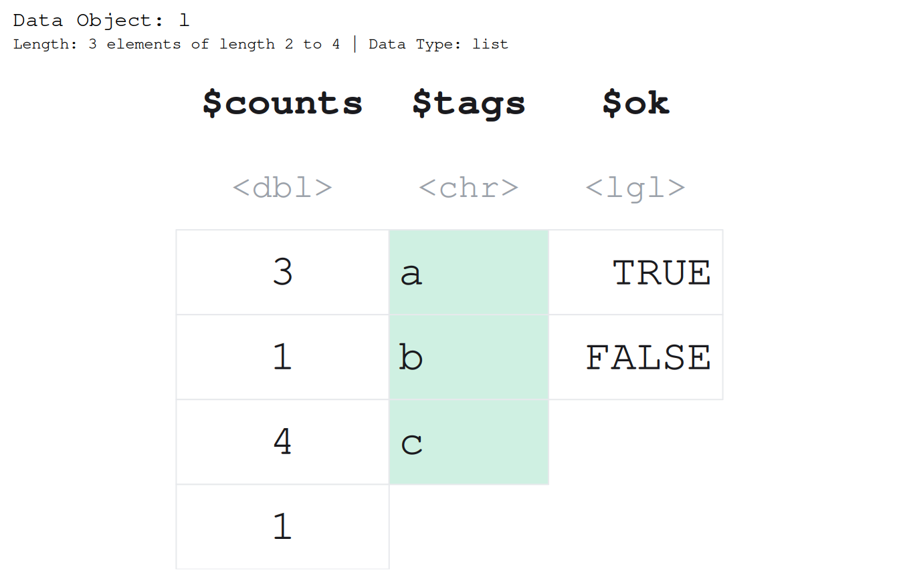
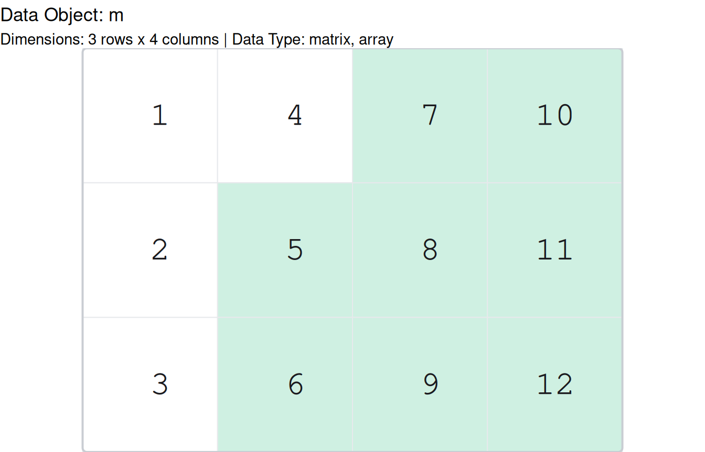

When you draw a structure to teach with it, you almost always want to point at one part of it: this row, that column, the cells that pass a test. Every paintr painter takes a highlight_area argument for exactly this, and every picture in this article is the same drawing twice, once plain and once with a patch of colour laid over the cells that matter.
A highlight is a logical mask
highlight_area wants a logical structure the same shape as your data: TRUE wherever a cell should light up, FALSE everywhere else. Nothing more. Here is a small matrix and a mask that turns on its second row by hand.
paint_matrix(m, highlight_area = mask)
The mask and the data share a shape, so the painter reads them cell for cell. You will rarely build one by hand, though, because paintr gives you a small family of functions that build the mask for you.
The three builders
highlight_data() is the general builder, and three convenience wrappers cover the common cases. Each one returns a mask of the right shape that you hand straight to highlight_area.
highlight_rows() takes a row selection: integer positions, or a logical vector, or names when the data has them.
paint_matrix(m, highlight_area = highlight_rows(m, c(1, 3)))
highlight_columns() takes a column selection the same way.
paint_matrix(m, highlight_area = highlight_columns(m, 2:3))
highlight_locations() reaches individual cells. For a two dimensional structure it takes a two column matrix of row/column pairs, one point per row.
points <- rbind(
c(1, 1),
c(2, 3),
c(3, 4)
)
paint_matrix(m, highlight_area = highlight_locations(m, points))
All three are thin wrappers over highlight_data(), so you can also ask for rows and columns at once and get their union:
paint_matrix(m, highlight_area = highlight_data(m, rows = 1, columns = 4))
A comparison is already a mask
A mask is just a logical the shape of the data, and that is exactly what an R comparison hands back. So you can skip the builders entirely and pass a test:
m > 4
#> [,1] [,2] [,3] [,4]
#> [1,] FALSE FALSE TRUE TRUE
#> [2,] FALSE TRUE TRUE TRUE
#> [3,] FALSE TRUE TRUE TRUE
paint_matrix(m, highlight_area = m > 4)
This is the quickest way to show a class what a vectorised comparison is: the red-and-white grid of m > 4 and the highlighted picture are the same object. which(), is.na(), and friends all produce masks you can drop straight in.
A different colour
The default highlight is a soft "lemonchiffon". Any R colour works through highlight_color:
paint_matrix(m, highlight_area = m > 4, highlight_color = "lightpink")
Highlighting works on every structure
Here is the invariant, stated plainly: if a painter can draw a structure, highlight_data() can mask it. The builders take the same arguments whatever you point them at, and highlight_columns() in particular will name a column by its name for the structures that have names.
A data frame column, selected by name:
df <- head(iris, 6)
paint_data_frame(df, highlight_area = highlight_columns(df, "Sepal.Width"))
A list is drawn as its elements side by side, so its elements are its columns. highlight_columns() names one the same way it named a data frame column:
l <- list(counts = c(3, 1, 4, 1), tags = c("a", "b", "c"), ok = c(TRUE, FALSE))
paint_list(l, highlight_area = highlight_columns(l, "tags"))
Because a data frame is a list whose elements share a length, and a mask is a mask, the same call reads the same way across the whole family. See vignette("paintr", package = "paintr") for the full tour of the five structures.
Base and ggplot2, the same mask
Highlighting is a property of the drawing, not of the backend, so the mask you build feeds a base picture and a ggplot2 picture without change. The matrices above were base graphics; here is the identical highlight through gpaint_*:
gpaint_matrix(m, highlight_area = m > 4)
The paint_* and gpaint_* families take the same highlight_area and highlight_color arguments and mean the same thing by them. For how the two backends differ underneath, see vignette("base-vs-ggplot2", package = "paintr").